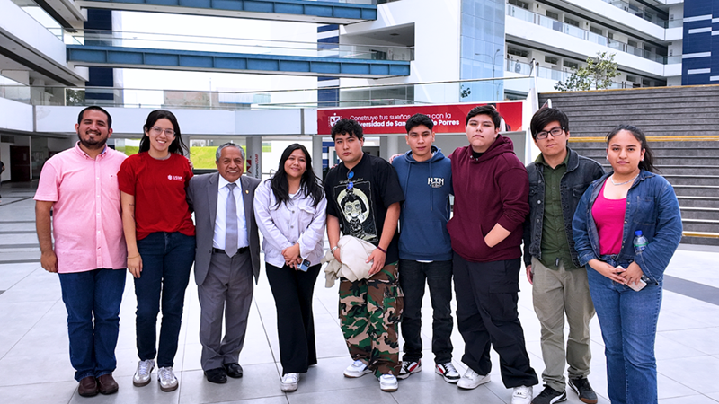
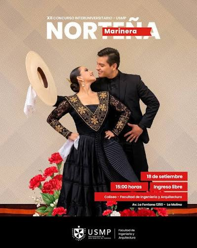
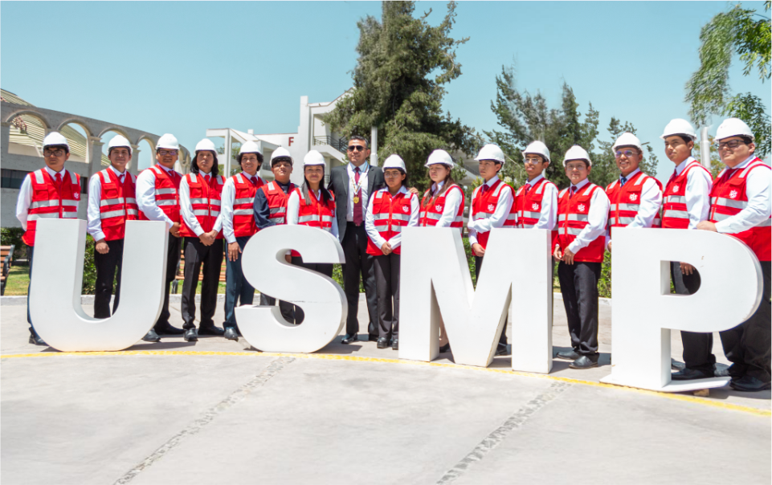
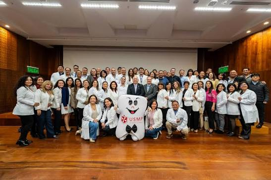
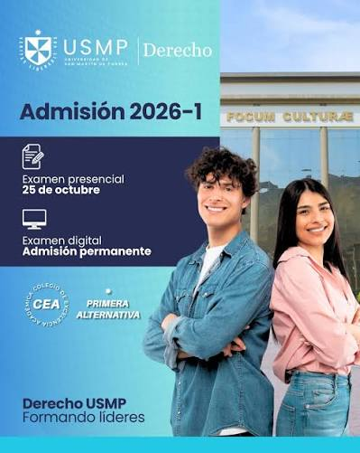
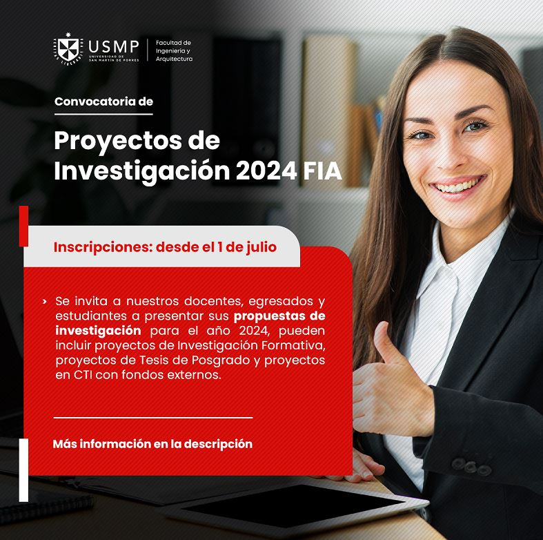
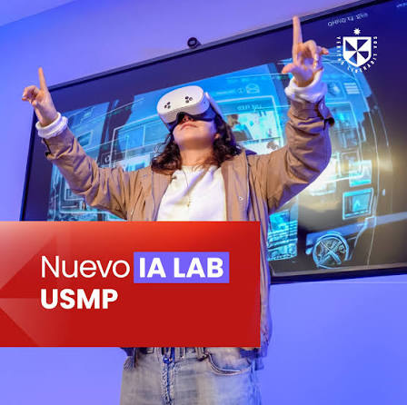

Portal de clubes estudiantiles USMP
Plataforma web dirigida a los estudiantes de la Facultad de Ingeniería y Arquitectura de la USMP, que permite conocer, explorar e inscribirse en los diferentes clubes estudiantiles. Su objetivo es fomentar la participación, integración y desarrollo de habilidades mediante actividades académicas, tecnológicas, culturales y recreativas.
Ver clubes

Club de Marinera
Talleres de danza y cultura peruana para todos los estudiantes.
Ver más
Participación que transforma
Integración estudiantil
Actividades y espacios que fomenten la convivencia, participación y conexión entre estudiantes.
Bienestar estudiantil
Espacios y servicios orientados a cuidar el bienestar emocional, social y personal de los estudiantes.
Apoyo académico
Recursos, asesorías y orientación para ayudar a los estudiantes a mejorar su rendimiento académico.




Admisión
Convocatoria de admisión: fechas y requisitos para postulantes.
Leer sobre Admisión (se abre en otra pestaña)
Investigación
Proyectos de innovación estudiantil: resultados y publicaciones recientes.
Leer sobre Investigación (se abre en otra pestaña)
Open Day
Open Day USMP: invita a más personas a conocer ALMA MATER.
Leer sobre Open Day (se abre en otra pestaña)¿Necesitas ayuda en tu carrera?
Pregúntale a tus compañeros y crezcan juntos en las comunidades de USMP.
Más información